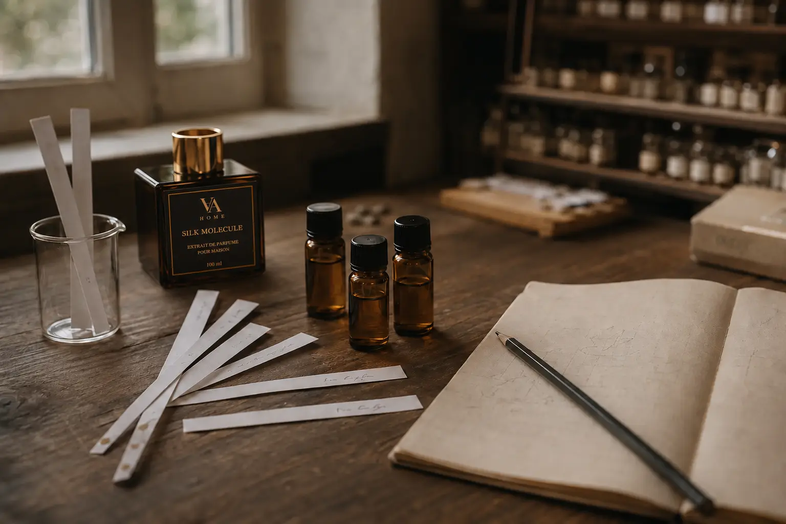
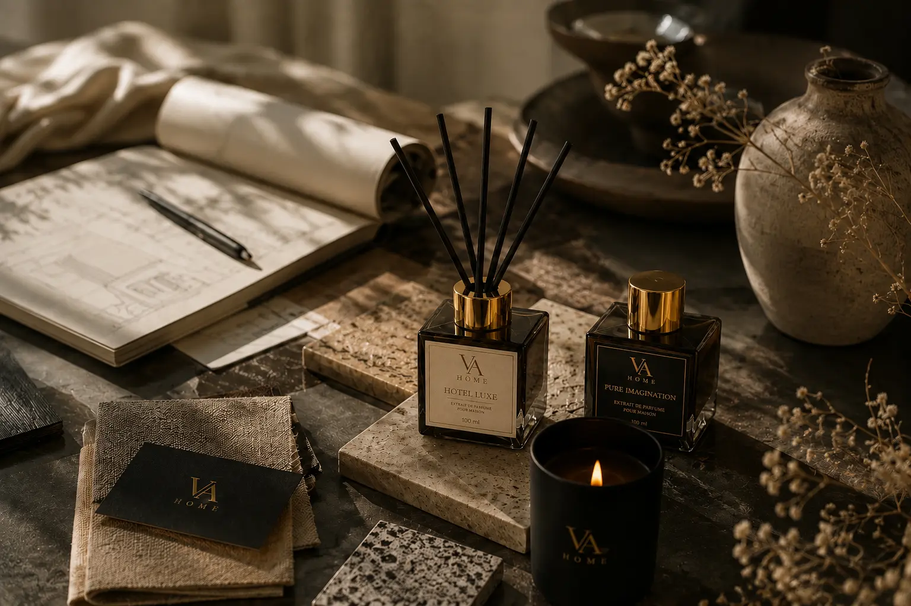
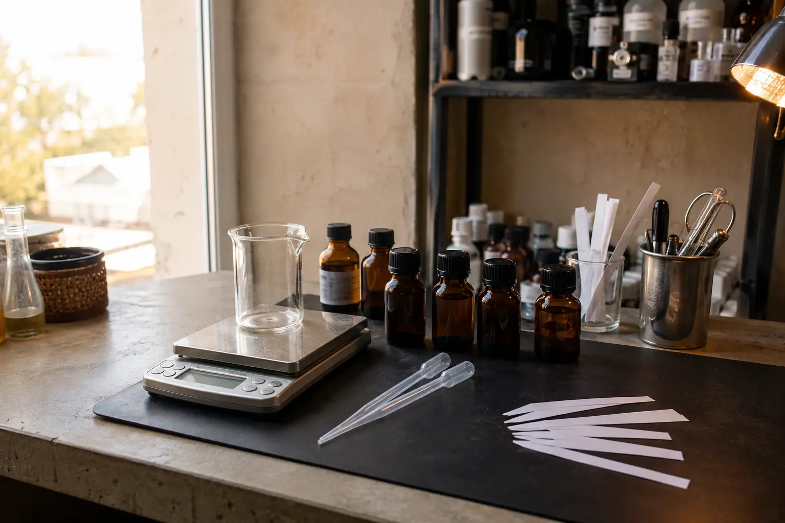
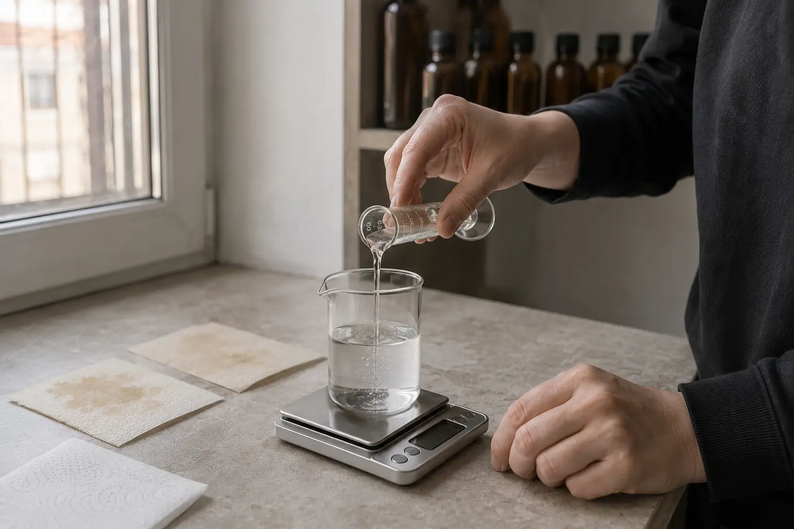
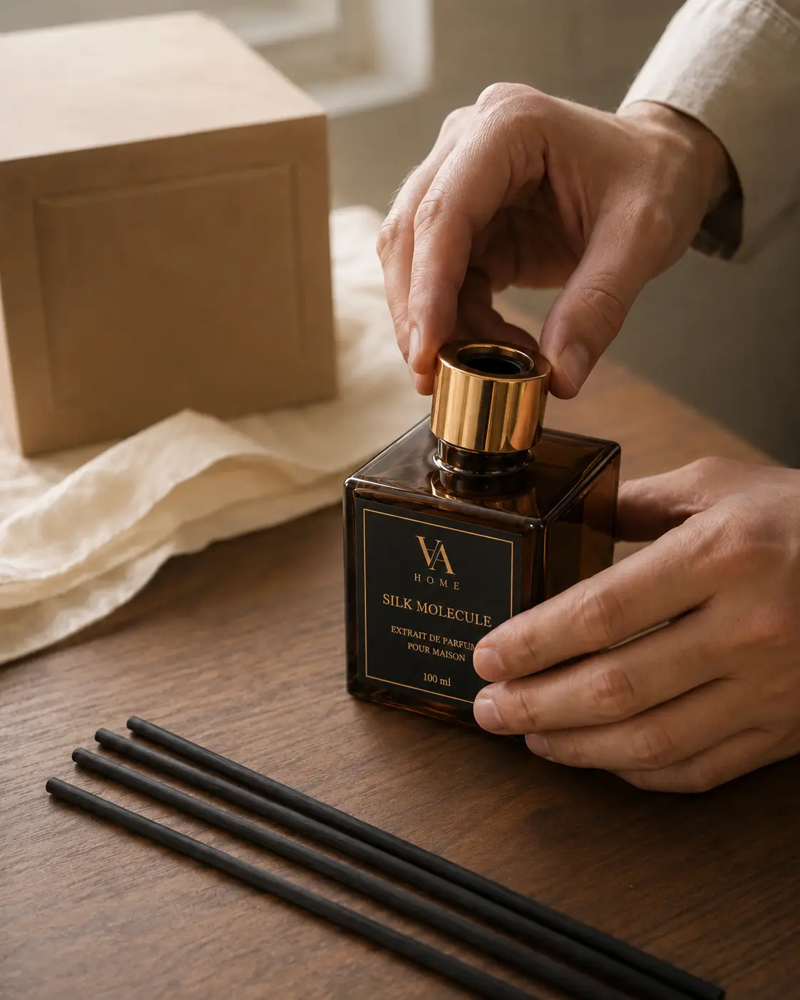
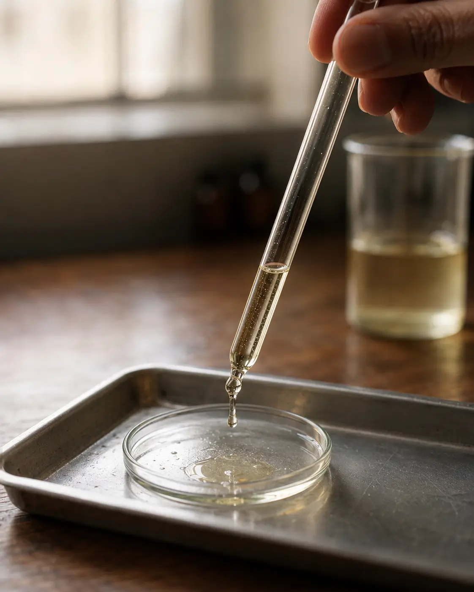
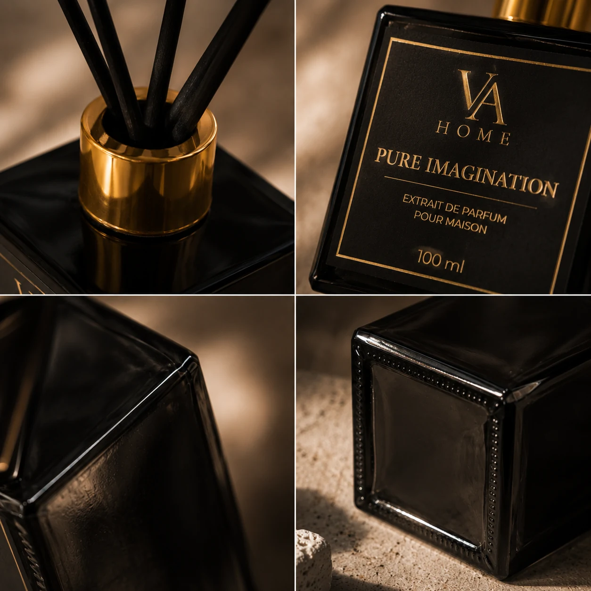
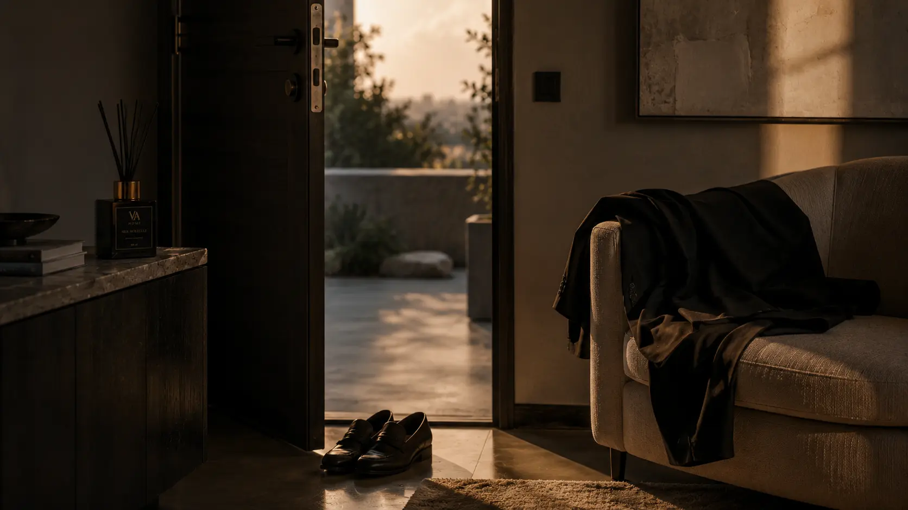

01 / CHARACTER
Ароматична композиція
Характер починається з композиції
Визначає характер, настрій і розвиток аромату — від першого враження до фінального звучання.
Філософія VA HOME
Ми створюємо композиції не для того, щоб заповнити кімнату запахом. Вони мають зібрати простір в одне відчуття.
Почалося з відчуття
Світлом у другій половині дня. Тишею після дощу. Теплом дерева, чистою постіллю, прохолодою каменю.
Аромат працює так само: він не просить уваги, але змінює враження від усього простору. Саме з цього спостереження виріс VA HOME — український бренд із Полтави, де кожна композиція проходить власний шлях від задуму до готового флакона.

Лаконічний дизайн не відволікає від головного — атмосфери, яку створює аромат.
Inside VA HOME
Кожен компонент має конкретну роль. Не заради складності — заради природного, об’ємного й стабільного звучання у просторі.

Ароматична композиція
Визначає характер, настрій і розвиток аромату — від першого враження до фінального звучання.

Сучасні ароматичні молекули
Допомагають композиції звучати об’ємніше, додаючи повітря, глибину або м’який шлейф саме там, де цього потребує формула.

Преміальна база для дифузії
Забезпечує стабільне підняття аромату паличками та його рівномірне розкриття у просторі день за днем.

Ручне складання VA HOME
Невеликі партії дозволяють контролювати змішування, розлив, комплектацію та вигляд кожного готового дифузора.

Molecular architecture
Ароматичні молекули допомагають композиції звучати природніше та багатогранніше. Одні додають прозорість і повітря, інші — деревну м’якість, амброву глибину або відчуття теплого текстилю.
Їхнє завдання — не перекрити характер аромату, а підтримати його й зібрати всі ноти в цілісне звучання.
Від задуму до простору
Ми оцінюємо не лише аромат у флаконі. Важливо, як він поводиться на відстані, у русі повітря та через кілька годин після встановлення.
Спочатку — конкретна сцена: мінеральна прохолода, чиста постіль, темне дерево чи вечірнє світло.
Добираємо ароматичний напрям і вибудовуємо характер від першого враження до базового шлейфу.
Додаємо молекули та коригуємо пропорції, щоб звучання було об’ємним, але комфортним для дому.
Перевіряємо інтенсивність, відстань звучання, стабільність і поведінку композиції в реальному приміщенні.
Формула розливається невеликими партіями, після чого кожен дифузор комплектується та перевіряється.
Готовий аромат стає частиною простору — відчутною, але не нав’язливою.

The Object
Лаконічний дизайн створений, щоб гармонійно доповнювати інтер’єр, а не домінувати в ньому. Темне скло, золотий акцент і чорні палички природно стають частиною простору.

The Ritual
Почніть із трьох-чотирьох паличок. Дайте композиції кілька годин — і вона стане частиною повітря, а не окремим запахом у кімнаті.
Ритуал використання →Invisible Luxury Atmosphere